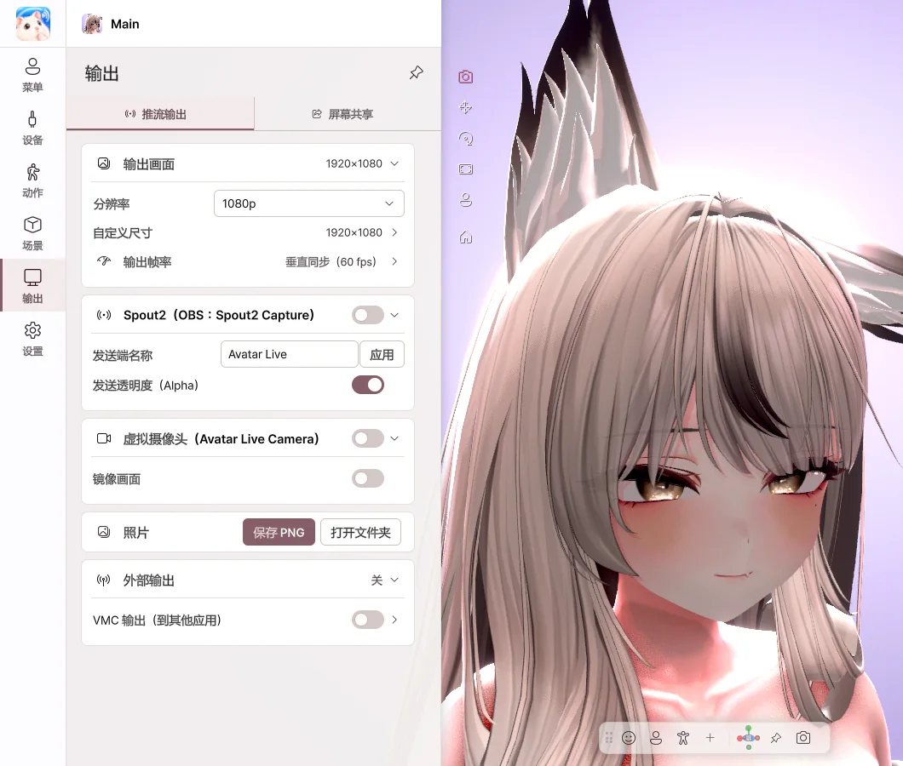

9. 输出
将角色画面发送到直播软件或通话应用。
| 发送到 | 方法 |
|---|---|
| OBS（透明背景） | Spout2 |
| Discord · Zoom · Teams 的摄像头 | 虚拟摄像头 |
| Discord 游戏直播 | 屏幕共享 |
| 照片 | 保存 PNG |
推流输出

- 输出画面 — 选择输出的画面尺寸。
- Spout2 — 开启后在 OBS 中添加 Spout2 Capture 来源，角色就会出现。将背景设为 透明，即可不带背景发送。
- 虚拟摄像头 — 首次使用时点击一次 安装虚拟摄像头…，然后在目标应用中选择 Avatar Live Camera 作为摄像头。
- 照片 — 用 保存 PNG 保存不含菜单的画面。
Discord 只在启动时查找摄像头。如果列表中没有，请完全退出 Discord 后重新打开。
Discord 屏幕共享

- 在 共享对象 中选择游戏或显示器。
- 开启 屏幕共享。
- 在 Discord 中选择 屏幕共享 → 应用程序 → Avatar Live Share Output，并开启声音。
- 好友看到的是游戏和角色，你自己只看到游戏。
- 在预览中拖动角色，调整位置和大小。
- 开启 游戏声音 后，只会把游戏的声音发送给好友。
如果游戏显示为黑色，请尝试将游戏切换为 无边框窗口 或 窗口模式。建议不要以管理员权限运行 Avatar Live。
💡 仅支持全屏的游戏可能无法使用屏幕共享。这种情况下，请通过 OBS 进行推流。
外部输出（VMC）
开启 VMC 输出 后，会将角色的动作发送到其他应用。这是实验性功能。